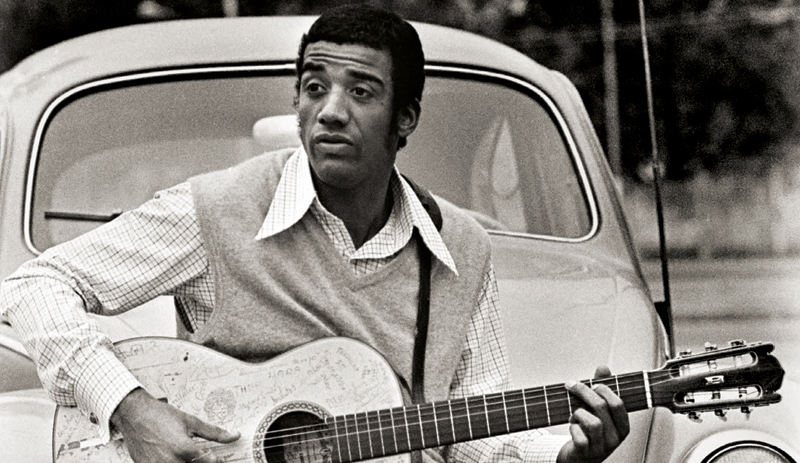

Sabemos que o exímio cantor carioca é um mago alquimista. É um dos artistas precursores da magia e alquimia na música brasileira. Famoso por seu "País Tropical", Jorge conquistou o coração de muitos brasileiros e gringos. Porém, o que a massa pouco sabe é de que este homem sabe muito sobre os escritos alquímicos medievais, como os de Nicolas Flamel e Paracelso.
Imagem de Jorge Ben com seu violão sobre um Fusca, foto em preto e branco.
Explicação sobre o álbum
Explicação sobre o álbum 2